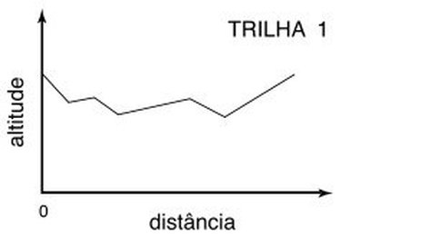

Uma trilha é descrita como um conjunto de alturas representando os trechos de subidas e descidas. Considere que apenas existe esforço para os trechos onde existem subidas e que descer não realiza esforço. Uma trilha pode ser percorrida em qualquer sentido.
Por exemplo, seja a trilha de 6 pontos a seguir.
300 305 301 299 290 295Se ela for percorrida no sentido esquerda direita vai gastar 10 de esforço: - 5 no trecho 1 : (305 - 5) - 0 no trecho 2 - 0 no trecho 3 - 0 no trecho 4 - 5 no trecho 5 : (295 - 5)
Se ela for percorrida no sentido contrário vai gastar 14 de esforço. Então o melhor esforço da trilha é 10.
Dado uma trilha, você deve calcular o menor esforço para percorrê-la.
>>>>>>>> 00
6 300 305 301 299 290 295
========
10
<<<<<<<<